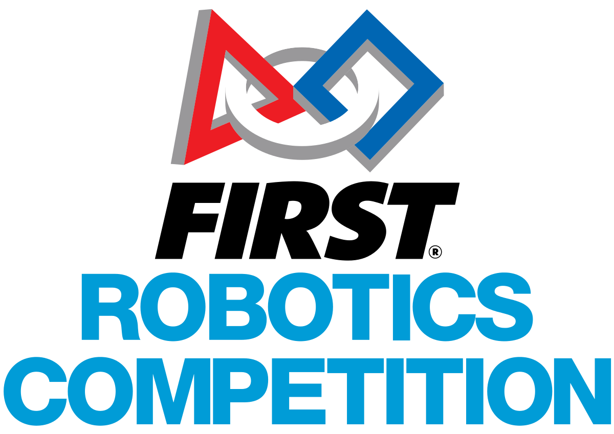

Personal
Consistently Top 10 In My Region for 4 years
| Program Information: | Tdssaa is the the the TDSB sports association that organizses all the high school sports competetions. They organize the region and city wide swimming competetion that I compete in every year |
|---|---|
| Project Information: | I compete in the 50m freestyle, 100m Individual Medley, 50m Buterfly and 200M relay every year and have been awarded for placing in the Top 7 for atleast one event every year. |

Top 10 In Deca Toronto Regionals
| Program Information: | Deca is a business analysis club where the students pick a cluster and analyze a problem given to them within the first 10 minutes and prodive a solution through a presentation to a judge in the next 10 minutes. A one hour exam is also written by students prior to the case study. Click the image above for more information. |
|---|---|
| Project Information: | I am current in the AutoMotive Service Marketing Cluster and recived awards for achiving top ten highest marks in both the written exam and the oral presentation in Toronto. I am moving onto the provincial level, taking place on Frbruary 7, 2020. |
GoIT Certification to Teach
| Program Information: | GoIT is a program by Tata Consultancy Services that goes to TDSB high schools and teaches the grade nine sutudents about how to use MIT App Inventor over a period of two school days. The students present thier app idea along with a business pitch at the end of the second day. Click the image above for more information. |
|---|---|
| Project Information: | The I am a part of team 5036: The Robo Devils. I joined the team in 2018 which is also the second year in a row the team qualified for the world championships. I work on the mechanical side of things in the team however due to small numbers, everyone on the team works on everything, including planning, designing, programming, eletrical etc.... I worked on the mechanical side for the 2018 robot as it was my first year and have been working on the coding and designing fronts for the past 2 years as well. |
Coordinated

FRC World Championship Semifinalits
| Program Information: | For Inspiration and Recognition of Science and Technology (FIRST) an organization that holds robotics competition worldwide for students between grades 1-12. FIRST Robotics Competition (FRC) is the robotics competition held for high school students with a new task every year with set instruction and rules. Every team is given 6 weeks to build a robot after which each team chooses to go to 2 competitions out of the many spread out over 4 weeks. The teams that qualify then compete in the provincial competition followed by the world championships for the teams that qualify at the provincial competition. |
|---|---|
| Project Information: |
Participated In the Senior Iot Competetion
| Program Information: | GoIT is a program by Tata Consultancy Services that goes to TDSB high schools and teaches the grade nine sutudents about how to use MIT App Inventor over a period of two school days. The students present thier app idea along with a business pitch at the end of the second day. Click the image above for more information. |
|---|---|
| Project Information: | The GoIT team was looking for volunteers to help them in their sessions and my Computer Science teacher recommended me along with two other students to them. TCS then tranied me on how to teach the MIT app inventors along with other students chosen from other schools and gave me the certification to teach MIT App Inventor 2 |
2 Sucessful Junior Achievement Companies
| Program Information: | GoIT is a program by Tata Consultancy Services that goes to TDSB high schools and teaches the grade nine sutudents about how to use MIT App Inventor over a period of two school days. The students present thier app idea along with a business pitch at the end of the second day. Click the image above for more information. |
|---|---|
| Project Information: | The GoIT team was looking for volunteers to help them in their sessions and my Computer Science teacher recommended me along with two other students to them. TCS then tranied me on how to teach the MIT app inventors along with other students chosen from other schools and gave me the certification to teach MIT App Inventor 2 |